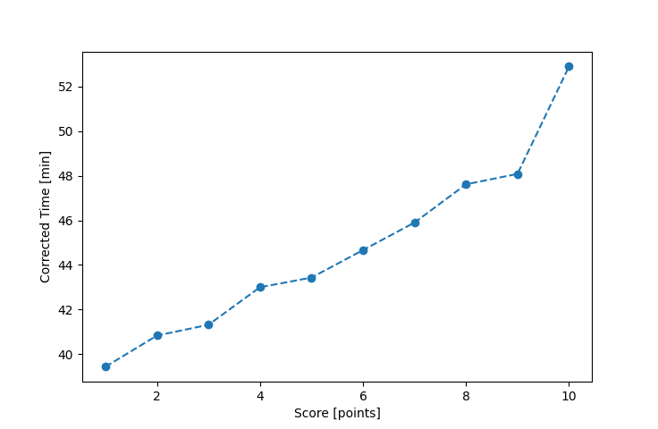

| Wind: | ? (BFT) |
|---|---|
| RC: | Gail_K, Mike_K, Barry_O |
| Date: | July 22, 2018 |
| Notes: | M2 Port Rounding |
| Rank / Score | Name | Boat | Input Time [mm:ss] | Input Offset [mm:ss] | Race Time [mm:ss] | Race Time [s] | Handicap | Corrected Time [s] | Corrected Time [mm:ss] |
|---|---|---|---|---|---|---|---|---|---|
| 1.0 | Mike_F | SF | 40:37 | 00:00 | 40:37 | 2437 | 1.03000 | 2366 | 39:26 |
| 2.0 | Ron_F | F5 | 40:03 | 00:00 | 40:03 | 2403 | 0.98100 | 2450 | 40:50 |
| 3.0 | Chris_E | SF | 42:33 | 00:00 | 42:33 | 2553 | 1.03000 | 2479 | 41:19 |
| 4.0 | Rod_H | LASEM | 42:45 | 00:00 | 42:45 | 2565 | 0.99400 | 2580 | 43:00 |
| 5.0 | David_Bu | SF | 44:44 | 00:00 | 44:44 | 2684 | 1.03000 | 2606 | 43:26 |
| 6.0 | Nedra_F | SF | 46:00 | 00:00 | 46:00 | 2760 | 1.03000 | 2680 | 44:40 |
| 7.0 | Lewis_V | BCN | 40:57 | 00:00 | 40:57 | 2457 | 0.89200 | 2754 | 45:54 |
| 8.0 | Art_M | SWSX | 47:20 | 00:00 | 47:20 | 2840 | 0.99400 | 2857 | 47:37 |
| 9.0 | Steve_R | CAT125 | 49:03 | 00:00 | 49:03 | 2943 | (1.02000) | 2885 | 48:05 |
| 10.0 | Cody_M | SF | 54:29 | 00:00 | 54:29 | 3269 | 1.03000 | 3174 | 52:54 |

Application Notes:
All race results are unofficial
View source code at https://github.com/cessnao3/portsmouthracecalc/